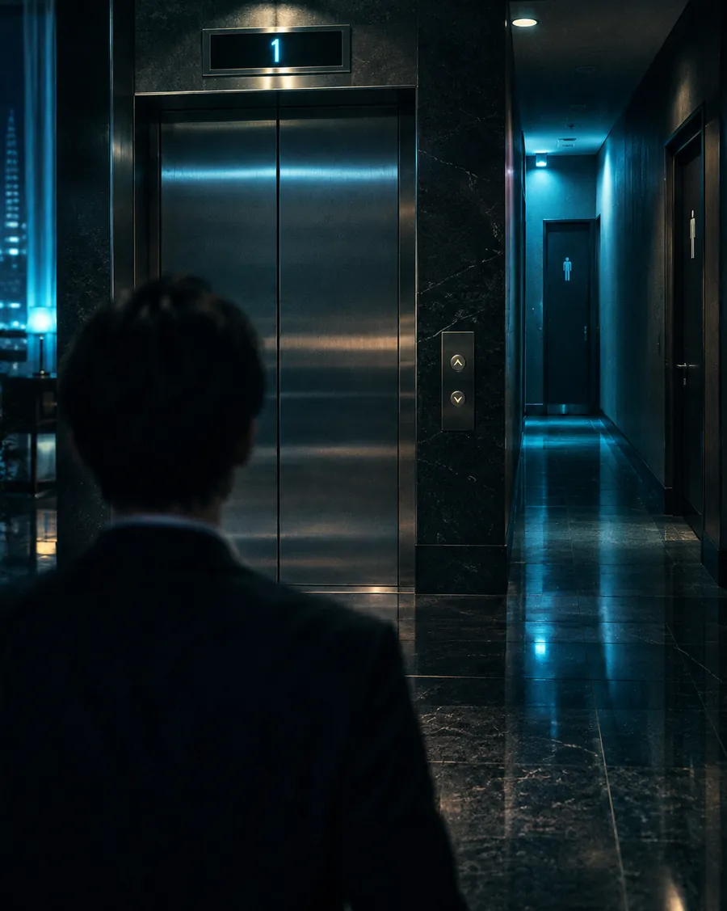
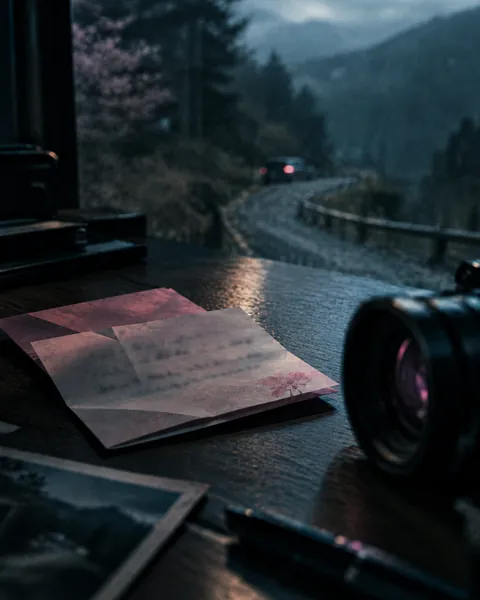
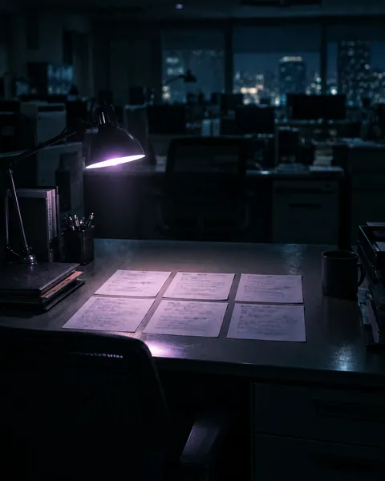
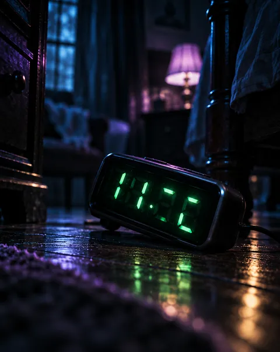
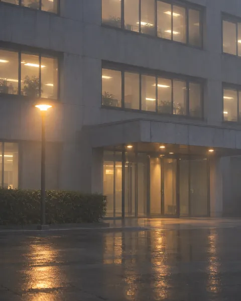
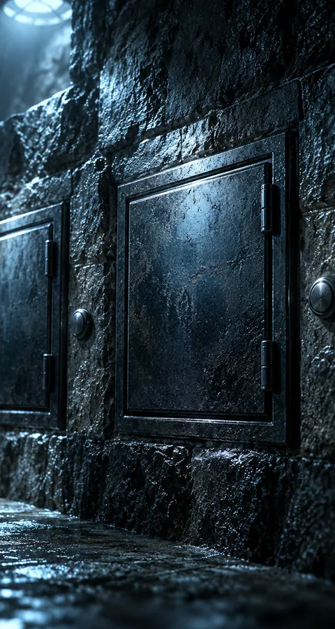

証言、図面、残された証拠、矛盾を見つけ、真相へ。
1事件3〜10分で遊べる、無料のミステリークイズです。

今夜の未解決ファイル高層ホテルで働く新人ベルボーイの久米は、ありえない場所に先に現れる。先輩たちは「瞬間移動」を疑うが……。
ファイルを開く厳選した事件と、あなたの未解決ファイルから。

厳選ファイル解決済FILE No. 004置き手紙の恋人★★☆約5分厳選ファイル解決済FILE No. 089時間差で効いた毒★★☆約5分
厳選ファイル解決済FILE No. 008噂の出どころ★★☆約5分
厳選ファイル解決済FILE No. 038止まったデジタル時計★★☆約4分厳選ファイル解決済FILE No. 011峠の社の石段★★☆約5分
厳選ファイル解決済FILE No. 029写真と合わない高さ★★☆約4分厳選ファイル解決済FILE No. 057止まった壁掛け時計★★☆約4分
厳選ファイル解決済FILE No. 053事件の記憶★★☆約4分気になる手がかりから、次の事件を探します。
「未解決ファイル」は、図面・証拠品・時系列を手がかりに、事件の真相を推理する無料のミステリークイズです。1件ごとに、状況記録、証拠品、現場の図面や写真、ヒント、真相、推理ポイントがそろっています。答えを当てるだけでなく、「どこを見れば解けたのか」まで確かめられます。3〜10分で解ける事件を、密室・アリバイ・暗号など7つのカテゴリに分けて集めています。
未解決ファイルは、図面・証拠品・時系列から真相を推理する無料のミステリークイズです。掲載の事件・人物・団体はすべて架空で、制作の一部にAIを活用しています。
運営者や問題の作り方、広告・アクセス解析の扱いは、このサイトについてとプライバシーポリシーをご覧ください。